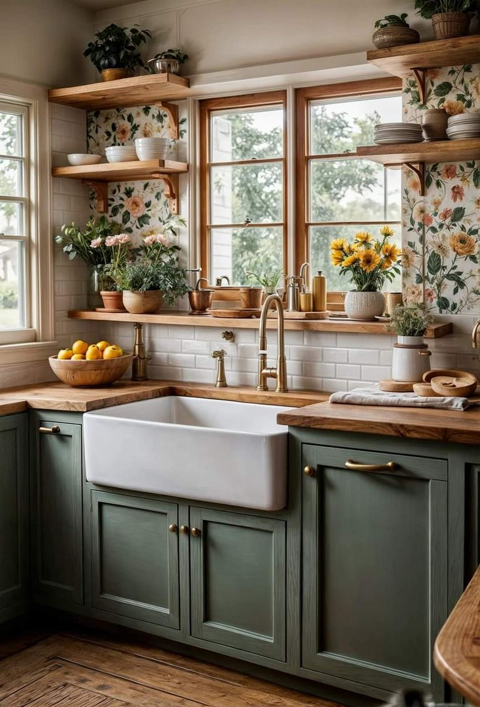
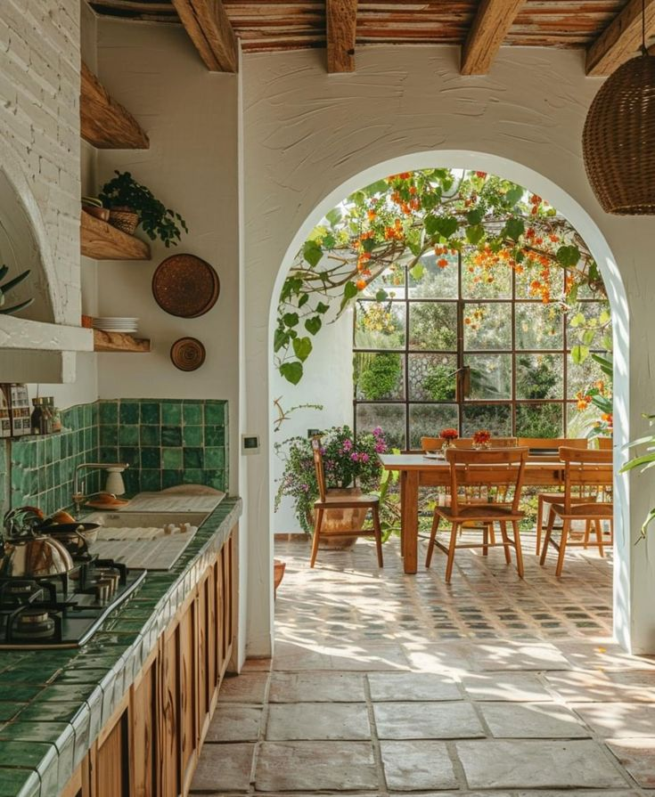
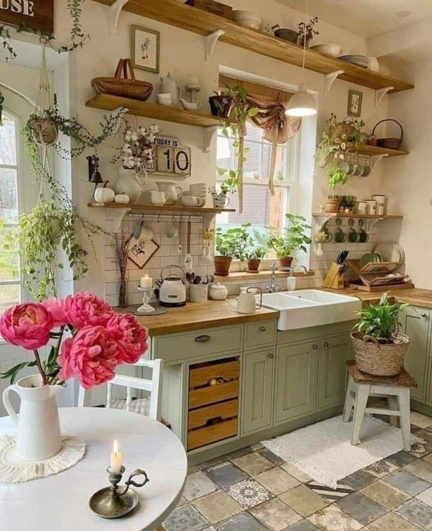

Kitchen Design
Kitchen interior design is an essential aspect of creating a functional and aesthetically pleasing cooking space. It involves careful planning and consideration of layout, color schemes, materials, and lighting to ensure the kitchen is not only efficient but also comfortable and visually appealing. The design process begins with understanding the needs and preferences of the homeowner, as well as the available space. One of the most popular layouts is the open-plan kitchen, which integrates the kitchen area with living or dining spaces, encouraging social interaction and making the kitchen feel more expansive.
- cabinets
- lights
- counters
- granite
- wooden
- tile
- coriander
Cabinetry
The choice of cabinetry plays a significant role in defining the overall style of the kitchen. Sleek, modern cabinets with clean lines and minimal hardware are ideal for a contemporary look, while shaker-style cabinets provide a more traditional, timeless feel. For a luxurious touch, custom cabinetry can be designed to fit the space perfectly, incorporating unique features such as pull-out shelves, built-in spice racks, or hidden appliances.
Color Schemes
In terms of color schemes, neutral tones like whites, grays, and beige are timeless and versatile, creating a calm and cohesive atmosphere. Bold colors, such as navy, emerald green, or mustard yellow, can be used as accent colors for cabinetry, backsplash tiles, or appliances to add personality and warmth to the space. Natural materials like wood, stone, and marble are commonly used in kitchen design for countertops, flooring, and backsplashes, providing texture and richness to the environment.
Lighting
Lighting is another key element in kitchen design, as it affects both functionality and ambiance. Task lighting is essential for areas like the countertops, stove, and sink, while ambient lighting creates a welcoming atmosphere throughout the room. Pendant lights above an island or dining area not only serve as functional light sources but also act as statement pieces. Under-cabinet lighting is a practical addition, illuminating work surfaces and adding a touch of elegance.
Storage
Storage solutions are crucial in a well-designed kitchen. Modern kitchens are equipped with innovative storage options, including pull-out pantry shelves, deep drawers for pots and pans, and overhead cabinets that reach the ceiling to maximize vertical space. A well-organized kitchen allows for easy access to cooking tools and ingredients, reducing clutter and enhancing the overall efficiency of the space.
Sustainability
Sustainability is becoming increasingly important in kitchen interior design. Homeowners are opting for energy-efficient appliances, water-saving fixtures, and eco-friendly materials, such as recycled countertops or bamboo cabinetry, to reduce their environmental footprint. Smart technology is also being integrated into kitchens, with features like touchless faucets, smart refrigerators, and voice-activated appliances that add convenience and functionality to the space.Ultimately, kitchen interior design is about creating a space that balances beauty, practicality, and personalization. Whether you're looking for a cozy farmhouse kitchen, a sleek and modern design, or a warm and inviting space for family gatherings, the possibilities are endless. The key is to tailor the design to suit your lifestyle while ensuring that the space is functional and conducive to cooking, entertaining, and spending quality time with loved ones.
Lowes has some amazing resources!
Jump to Top